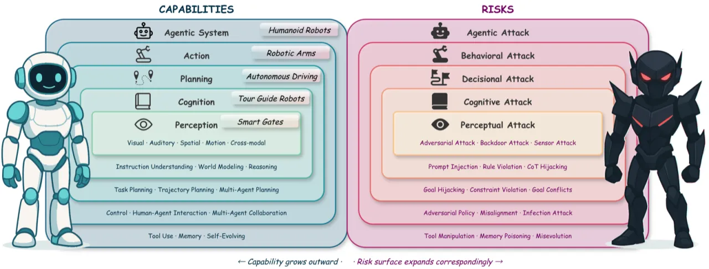
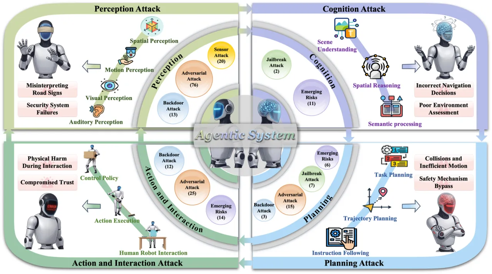
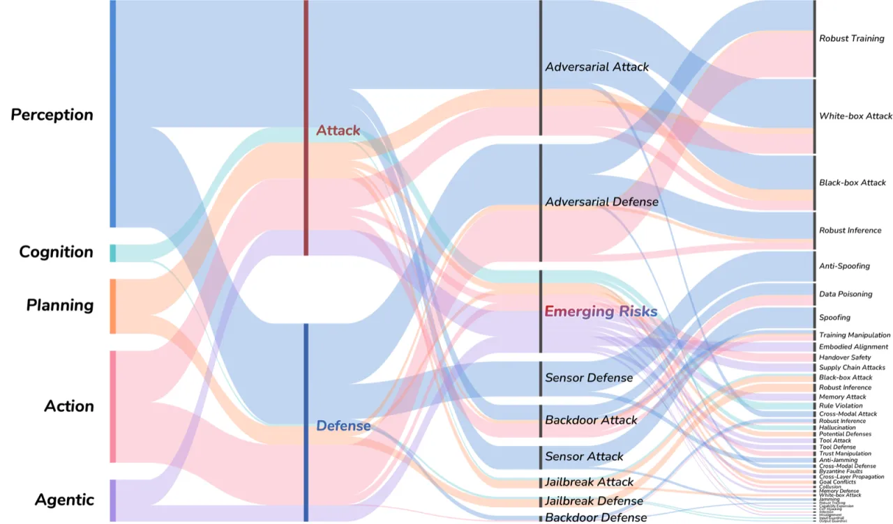

具身智能（Embodied AI）将感知、认知、规划与交互集成于在开放世界中自主运作的智能体。 本综述系统梳理了500余篇论文，构建了从感知→认知→规划→行动交互→智能体系统的五层分类体系， 揭示了对抗攻击、后门攻击、越狱攻击和硬件级攻击的全链路风险与防御手段， 为建造"能力强且安全可靠"的具身智能体提供路线图。
具身智能正快速进入交通、医疗、工业与辅助机器人等高风险领域。与数字AI不同，具身智能体在不确定感知、不完整知识和动态人机交互下行动，一旦出现故障可直接导致物理伤害。 然而，当前安全研究高度碎片化——针对视觉感知、语言模型、规划器、硬件传感器的工作分散在不同社区，缺乏统一框架。
"Unlike digital AI systems, embodied agents must act under uncertain sensing, incomplete knowledge, and dynamic human-robot interactions, where failures can directly lead to physical harm."
核心洞察是"能力与风险的二元性"（capability vs. risk duality）：随着具身系统自主性增强，其攻击面也按比例扩大，且漏洞可跨层级级联传播。 例如，感知层的对抗扰动可导致认知层产生错误的世界模型，进而引发规划层生成危险轨迹，最终导致有害的物理行为。

本综述提出一套多层分类体系（multi-level taxonomy），将具身智能安全研究统一组织为五个能力层，每层涵盖若干子类，并系统梳理各层的攻击手段与防御方法。

感知层是具身智能体与物理世界交互的第一道关口，也是当前研究最密集的领域（199篇）。 子类别包括：
感知融合的脆弱性是最被忽视的挑战之一：多传感器融合系统（如视觉+LiDAR）在单模态防御下仍可被跨模态攻击绕过。
认知层涵盖指令理解（instruction understanding）、世界模型（world models）和推理（reasoning）的安全漏洞。 大语言模型（LLM）和视觉语言动作模型（VLA）在此层面面临prompt injection、幻觉（hallucination）利用等独特威胁。
规划层涵盖任务规划（task planning）、轨迹规划（trajectory planning）和多智能体协调（multi-agent coordination）的安全问题。 越狱攻击（jailbreak attacks）对规划系统的不稳定性尤为突出——攻击者可通过精心设计的指令诱导智能体执行危险动作序列。
此层聚焦机器人控制（robot control）、人机交互（human-agent interaction）和协作（collaboration）安全。 开放场景下的人机交互可信度问题（trustworthiness of human-agent interaction in open-ended scenarios）是当前最紧迫的研究缺口之一。
随着具身智能体获得工具使用（tool use）、记忆（memory）和自演化（self-evolving）能力，新的系统级风险涌现，包括跨系统的级联风险（cascading risks）和供应链攻击。

本综述通过系统收集与分类558篇论文，揭示了具身智能安全领域的研究分布、空白与三大被忽视的核心挑战。
| 能力层 | 论文数量 | 主要攻击类型 | 研究成熟度 |
|---|---|---|---|
| 感知（Perception） | 199 | 对抗样本、传感器欺骗 | 较成熟 |
| 行动与交互（Action & Interaction） | 112 | 控制劫持、人机交互操控 | 发展中 |
| 智能体系统（Agentic Systems） | 96 | 工具滥用、级联风险 | 新兴 |
| 规划（Planning） | 80 | 越狱攻击、轨迹毒化 | 发展中 |
| 认知（Cognition） | 38 | prompt injection、幻觉利用 | 早期 |
| 其他相关工作 | 33 | 综述、模型、基准 | — |
综述明确指出当前领域存在三个严重被低估的研究缺口（verbatim from paper）：
"The fragility of multimodal perception fusion, the instability of planning under jailbreak attacks, and the trustworthiness of human–agent interaction in open-ended scenarios."
现有对抗防御大多针对单一模态（图像或点云），而多传感器融合系统在面对跨模态协同攻击时防御能力严重不足。 例如，视觉-LiDAR融合的自动驾驶系统可被针对两个模态不一致性设计的攻击轻易绕过单模态防御。
基于LLM/VLA的任务规划器对越狱攻击高度敏感。攻击者可通过精心构造的自然语言指令绕过安全约束，诱导智能体执行本不应执行的危险动作，且防御手段明显滞后于攻击方法的演进速度。
在复杂、开放的真实场景中，人机交互（human-agent interaction）面临身份欺骗、意图误判和社会工程学攻击等独特挑战。 现有研究大多在受控环境中进行，缺乏对开放世界动态条件下人机信任机制的系统性研究。
| 攻击类型 | 典型手段 | 主要威胁层 |
|---|---|---|
| 对抗攻击（Adversarial Attacks） | 对抗补丁、L∞扰动、物理对抗样本 | 感知层 |
| 后门攻击（Backdoor Attacks） | 数据投毒、触发器嵌入、供应链污染 | 感知 + 认知层 |
| 越狱攻击（Jailbreak Attacks） | prompt injection、越狱模板、多轮诱导 | 认知 + 规划层 |
| 硬件级攻击（Hardware-level） | GPS欺骗、LiDAR干扰、MEMS声学注入 | 感知 + 行动层 |
综述识别了多个关键研究空白：
尽管收录了558篇论文，综述的论文遴选标准和分类边界不可避免地带有主观性。 部分跨学科工作（如自动驾驶安全、医疗机器人伦理）可能被归入或排除在外，读者需结合各子领域的专门综述使用本文。
具身AI安全领域发展极为迅速，新攻击手段（尤其是针对VLA和多模态LLM的越狱攻击）层出不穷。 综述内容（截至2026年5月修订）可能在数月内即出现显著新工作，需定期更新配套的 Awesome列表才能保持时效性。
综述中大多数防御方法在受控实验环境中验证，其在真实物理部署条件下（传感器噪声、计算资源限制、实时性要求）的有效性和鲁棒性尚缺乏系统性评估。 从实验室防御到实际部署之间的"最后一公里"问题是关键研究缺口。
认知层（Cognition）仅收录38篇论文，是五层中最薄弱的。 综述本身也承认，针对具身智能体世界模型和推理模块的安全研究是目前最欠缺的方向之一， 呼吁未来工作在此方向加大投入。